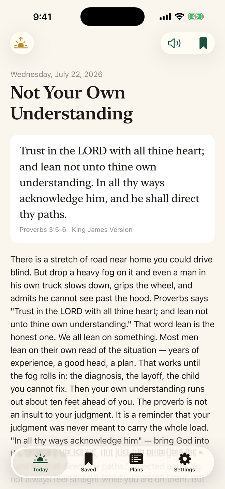
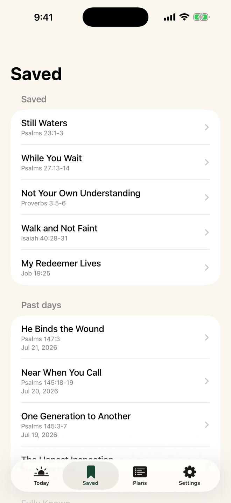
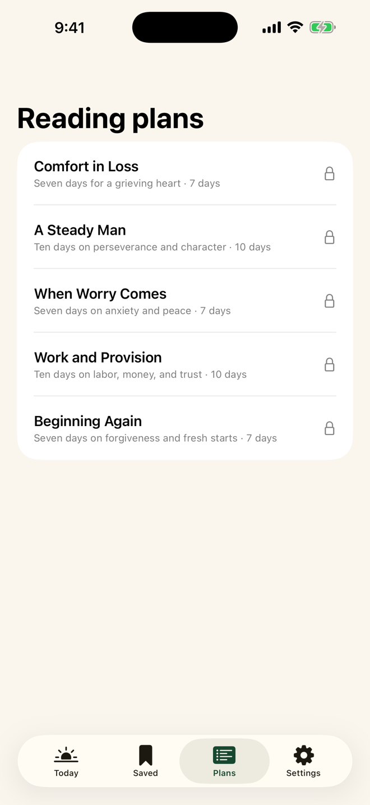
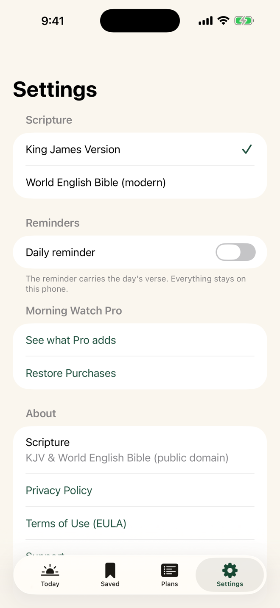

Morning Watch
One short devotional every morning — a passage, a plain-spoken reflection, and a one-line prayer. Made for men who want a steady start to the day.
Free every day, on iPhone and Android.
One short devotional every morning — a passage, a plain-spoken reflection, and a one-line prayer. Made for men who want a steady start to the day.
Free every day, on iPhone and Android.
“My soul waits for the Lord more than watchmen wait for the morning.”Psalm 130:6




The King James Version and the World English Bible. Choose your translation in Settings.
A gentle reading streak that keeps you steady, without nagging.
Hold on to the entries you want to come back to, all in one place.
An optional notification that carries the day's verse to you.
The daily devotional is free, every day. Pro adds the full archive, themed reading plans, private notes you can export, up to three daily reminders, and read-aloud — free for 30 days.
Morning Watch collects nothing. No accounts, no analytics, no tracking — your reading, streak, and notes never leave your phone. Read the privacy policy.